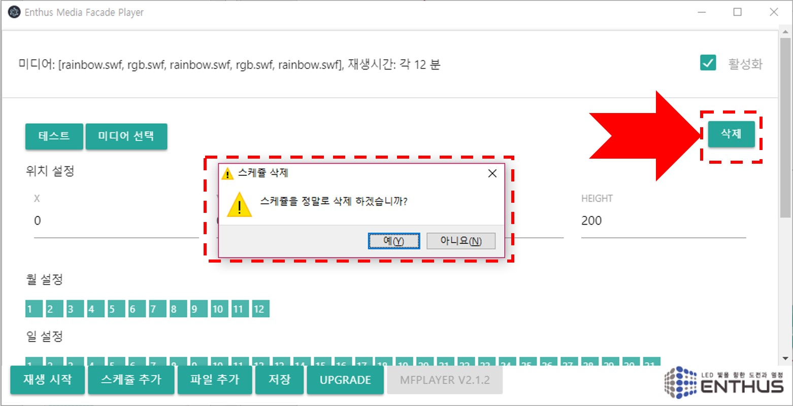
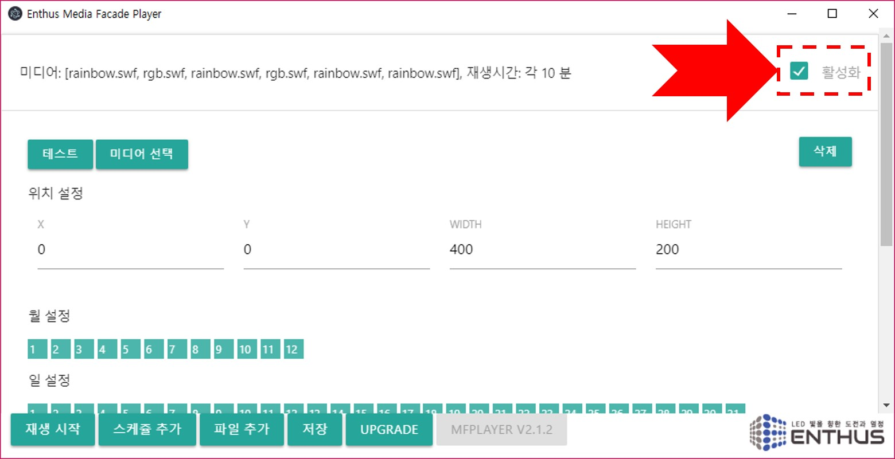
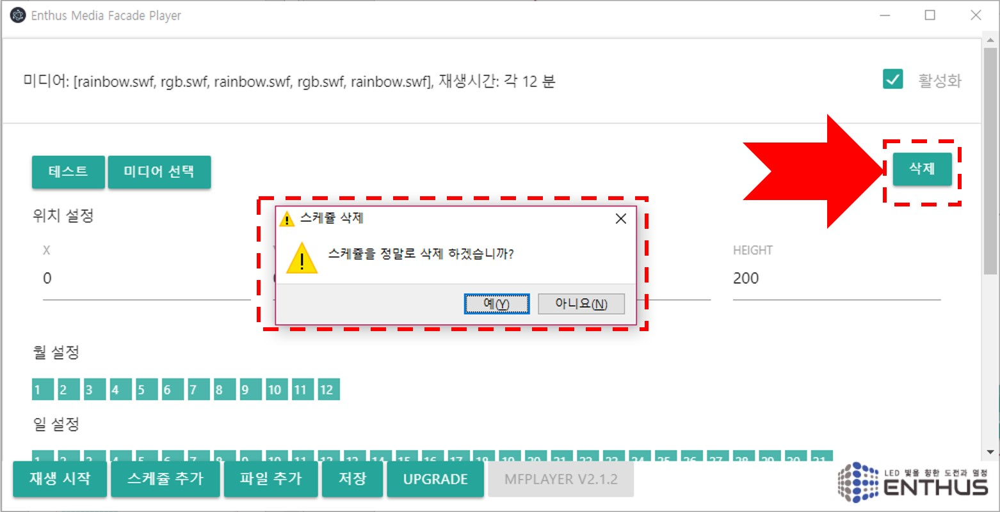
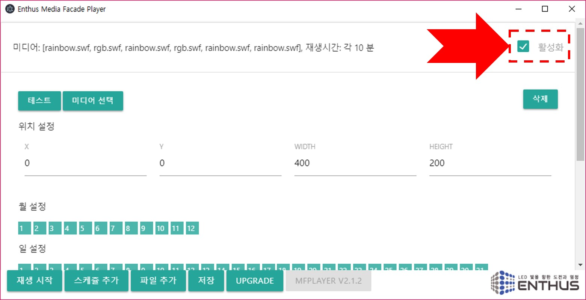

삭제
삭제 버튼을 클릭하면 경고메시지와 함께 스케쥴이 삭제됩니다.

활성화
스케쥴을 지우지 않고 사용하지 않는 상태로 유지하려면 활성화 박스를 클릭해서 상태를 바꿉니다. 활성화 되지 않은 스케쥴은 정해진 시간에 재생되지 않습니다.

삭제 버튼을 클릭하면 경고메시지와 함께 스케쥴이 삭제됩니다.

스케쥴을 지우지 않고 사용하지 않는 상태로 유지하려면 활성화 박스를 클릭해서 상태를 바꿉니다. 활성화 되지 않은 스케쥴은 정해진 시간에 재생되지 않습니다.
